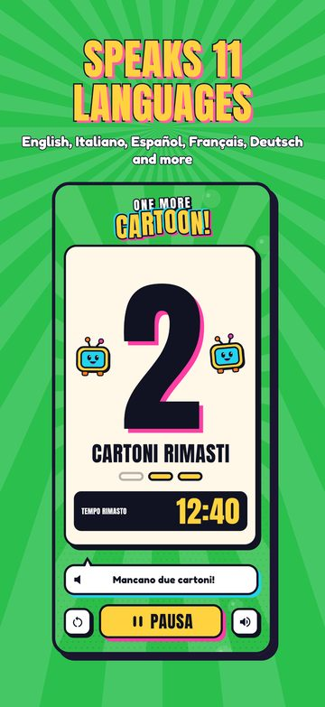

ONE MORE CARTOON!
泣かずにアニメを終わらせる、やさしいカウントダウン。
こどもが本当にわかるカウントダウン
「もう1本だけ！」聞き覚えはありませんか？One More Cartoon! はアニメの終わりをゲームに変えます。分ではなく、あと何本かが見えるから安心：3… 2… 1。明るい声が最後の1本の前に知らせて、次にすること（お風呂、ねんね、ごはん、おでかけ）を伝えます。
新機能：きょうだいモード。きょうだいみんなで1つのタイマー。声が一人ひとりの名前を呼び、「今夜はだれが選ぶ？」で順番に公平に決めます。
App Store からダウンロードApp Store近日公開Google Play
30日間無料 · その後は1回の購入でずっと使える · サブスクなし、広告なし



使いかた
- 何本見るか決める。 全体の時間と1本の長さを設定するか、本数だけで数えます。
- カウントダウンスタート。 大きな数字と踊る2台のテレビが残りの本数を表示。声が「あと2本！」と伝え、最後の1本も知らせます。
- 最後はお祝い。 「ゆうくん、ねんねの時間だよ！」マンガ風の終わりの画面で、次の行動への切り替えも遊びの一部に。
保護者に選ばれる理由
- 「あと10分」より「あと2本」のほうが、こどもにはずっとわかりやすい。
- 終わる前にやさしくお知らせするので、突然にならない。
- お知らせでこどもの名前を呼びます。きょうだいモードなら全員の名前も。
- 今夜はだれが選ぶ？ ルーレットでアニメを選ぶ人を決めるから、順番も公平でケンカなし。
- 次にすることを選べる：お風呂、ねんね、ごはん、おでかけ、または40種類のメッセージ。すべて同じ声で。
- 11言語、iPhone・iPad、縦・横どちらでも。カウント中は画面がつきっぱなし。
- 広告なし、アカウントなし、トラッキングなし：すべて端末の中だけ。
もっとヒントがほしい方は保護者向けガイド（英語）をどうぞ。
よくある質問
何歳向けですか？
時計はまだ読めないけれど、アニメの本数は数えられる2〜7歳くらいのこども向けです。設定は保護者が行い、こどもはカウントダウンを見るだけ。
なぜ分ではなく本数で数えるの？
小さなこどもには時間の感覚がありません。「あと10分」は伝わりませんが、「あと2本」なら見てわかるので受け入れやすいのです。
料金は？サブスクですか？
ダウンロード無料、すべての機能を30日間無料で使えます。その後は1回の購入でずっと使えます。サブスクも広告もありません。
YouTube や Netflix、テレビと使えますか？
はい。ほかのアプリやテレビを操作するのではなく、近くに置いたスマホやタブレットで、こどもが見ているものと一緒に動きます。
こどものデータを集めますか？
いいえ。アカウント、広告、分析、トラッキングは一切ありません。設定や名前は端末の中だけに保存されます。
Android 版はありますか？
Android 版は Google Play でテスト中で、まもなく公開予定です。